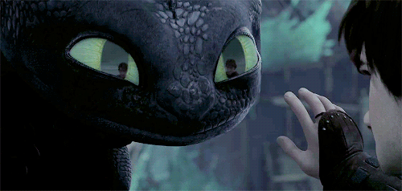

Primeiro Filme (2010)
📚 Sobre o Filme:
Lançado em 2010, Como Treinar o Seu Dragão é o primeiro filme da aclamada trilogia animada da DreamWorks. A história acompanha Soluço, um jovem viking que vive na ilha de Berk, onde dragões são vistos como inimigos mortais. Ao capturar um Fúria da Noite — uma das espécies mais perigosas — Soluço descobre que tudo o que sua vila acredita sobre dragões está errado. Com a ajuda de seu novo amigo Banguela, ele desafia as tradições e muda o destino de seu povo.
O filme é baseado no livro homônimo de Cressida Cowell, mas apresenta uma abordagem mais épica e emocional. A animação foi aclamada por seu visual impressionante, desenvolvimento de personagens e trilha sonora marcante composta por John Powell.
🧠Curiosidades:
🤠O nome original do dragão “Banguela†em inglês é Toothless, que significa “sem dentesâ€.br
🬠O filme foi indicado ao Oscar de Melhor Animação e Melhor Trilha Sonora.br
🨠A equipe de animação se inspirou no voo de águias e falcões para criar os movimentos realistas dos dragões.
📖 Apesar de ser inspirado no livro, o filme tem muitas diferenças — incluindo a personalidade do dragão e o tom da história.
🛡️ A DreamWorks contratou o renomado cineasta Roger Deakins como consultor visual para criar uma iluminação cinematográfica realista.
💬 A relação entre Soluço e Banguela foi inspirada na amizade entre humanos e seus animais de estimação.